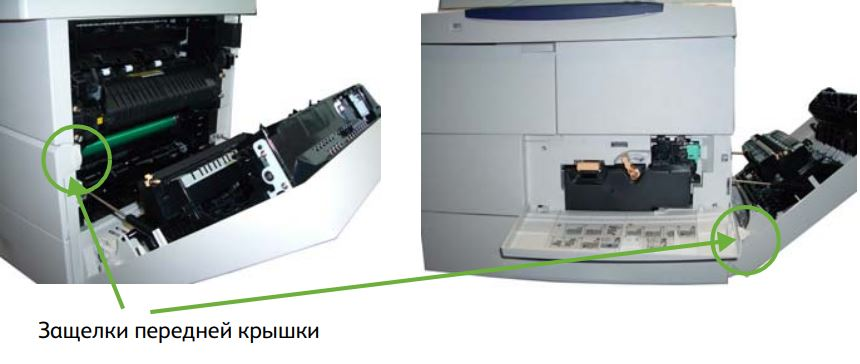

В описании этой процедуры показано, как снять с аппарата использованный тонер-картридж и установить новый. Емкость нового тонер-картриджа рассчитана на печать приблизительно 20 тыс. страниц при средней степени заполнения 5%.
Порядок замены тонер-картриджа:
- Откройте крышку с правой стороны устройства. Это откроет защелку
для открытия передней крышки. Откройте переднюю крышку.

- jkhuhfd